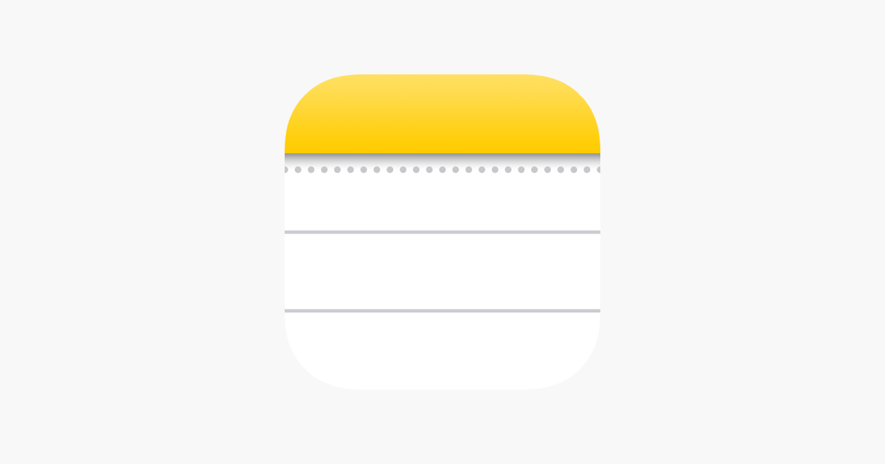
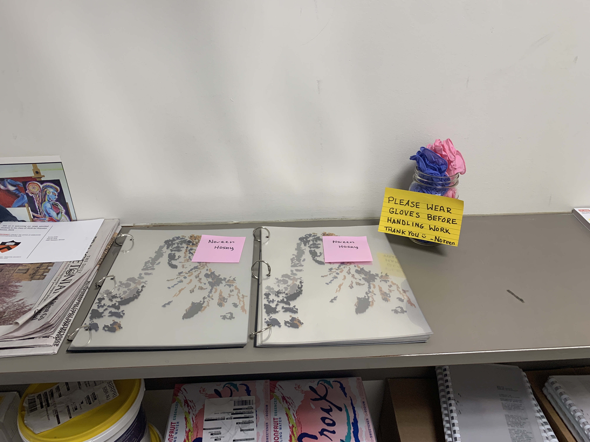
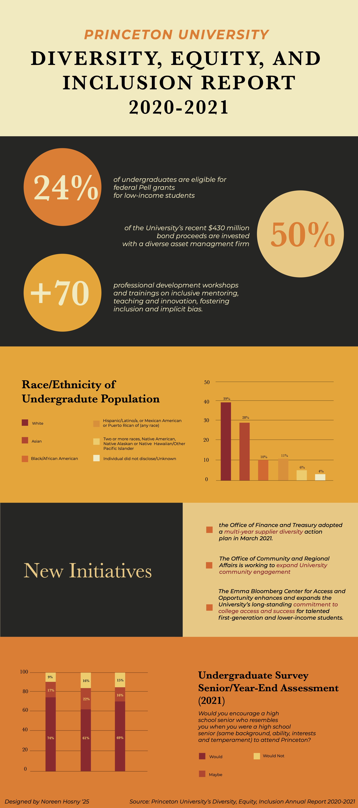

Lightweight Formats
Idea #1
How to Build a To-Do List

- Order Tasks by Subject
- Chemistry: Problem Set due Friday
- Physics: Problem Set due Wednesday
- Order Tasks by Priority
- Physics: Problem Set due Wednesday
- Chemistry: Problem Set due Friday
- Order Tasks by How Long They Will Take
- Physics: Problem Set due Wednesday (3 hours)
- Chemistry: Problem Set due Friday (2 hours)
Idea #2
How to Start A Project

- Start Creating -- It doesn't have to look perfect
- For the above project, I started drawing patterns on small glass titles using Sharpies
- I then repeated the process with different mediums, such as flourescent paint
- Evaluate your progress and start adding contraints
- I wasn't a fan of the more hands on approach I was taking
- Constraint #1: Must be done digitally using Illustrator
- Constraint #2: Elements of the project must largely be composed from earlier work, or from lab work -- infuse parts of yourself into your design
- Continue Creating
- Started making these images on Illustrator
- Separated the Illustrator file into different layers to compose a book made of clear pages
Idea #3
How to Choose a Font for Your Project!

- Think of the overall message of the work
- Is it more serious in tone? Is it light-hearted?
- This piece had a more serious message, so I used clean, readible sans-serif and serif fonts
- Consider how many sections there are
- If there are multiple sections, consider differentiating them by using different fonts that work together
- For example, here I combined a bold serif font with sans-serif for the body text
- Consider if the font family you choose has different weights
- The more weights, the better! Instead of using multiple fonts, you can use one font and differentiate the sections by weight
- For example, use the bold version for the header, and medium or normal version for the body text